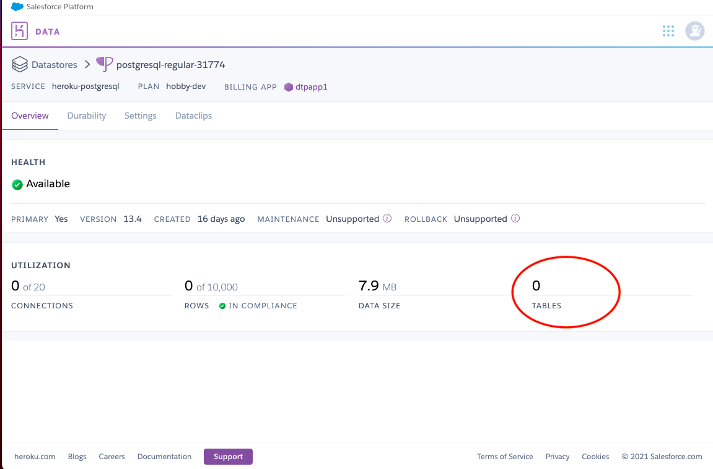
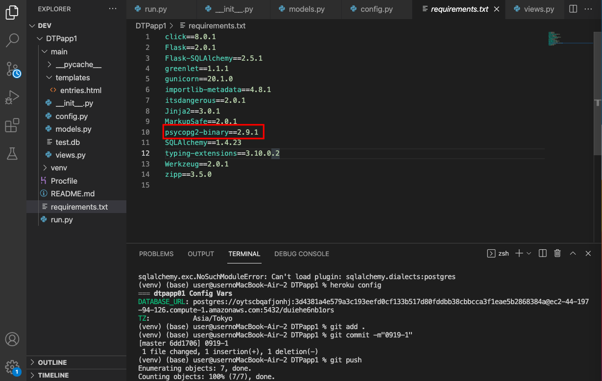

前回のエラーから解決する
2021/09/19
（9月15日分）
前回のエラー
ここのデータベースを追加しても、herokuのデータベース管理のPostgresにテーブルがなかった。
ここのデータベースに一つ作られていないといけないので、今回からまた試して進める。

ファイルから作り直してみた
どれを試しても、テーブルが出来上がらないので、1からやり直してみることにした。
最初のFlaskのファイルを作るところから始める。
次に詰まったところは、HerokuにGitHubを繋げてデプロイするところである。
pythonのpsycopg2のインストールで問題が発生していることがbuild logでわかる。
このエラーの直し方を示す。参考にしたページ
こちら
こちら←このアンサーに本当に助けられました。何度やってもデプロイできなかったので😭
①今インストールしているpsycopg2をアンインストールする。
pip uninstall psycopg2
pip list でインストールしているものがわかる。psycopg2がアンインストールされているか確認。
②新しいものをインストールする。
pip install psycopg2-binary
そうしたらpip list で psycopg2-binary がはいっていることを確認する。
③requirements.txt の中の psycopg2-binary のバージョンが違うので、pip listで確認したバージョンを入力する。
私の場合は、psycopg2-binary==2.9.1 に直しました。

これでherokuのデプロイのエラーはでなくなったが、やはりテーブルにデータベースが追加されない。
エラー原因として考えられるもの
①herokuの時間設定が東京にあっていない。以下のコードで変更可能。
heroku config:add TZ=Asia/Tokyo
こちらは確認済み
 ②psqlがうまくインストールされていない。
②psqlがうまくインストールされていない。
実際確認したら、こちらに問題ありそう。下記がエラーメッセージ
ここをもう一度インストールするところから始める。